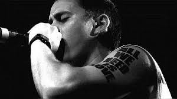

Tirone José González Orama, known by his stage name Canserbero, was a Venezuelan rapper, considered one of the most significant exponents of independent rap in his country and in the rest of Latin America. Wikipedia Born: March 11, 1988, Caracas, Venezuela Died: January 19, 2015 (age 26 years), Maracay, Venezuela Full name: Tirone José González Orama Parents: José Rafael González Ollarves, Leticia Coromoto Oramas Genres: Hip hop
 https://youtu.be/a9jxNusr0tE?si=JtFqJOHy8f3jWyDp